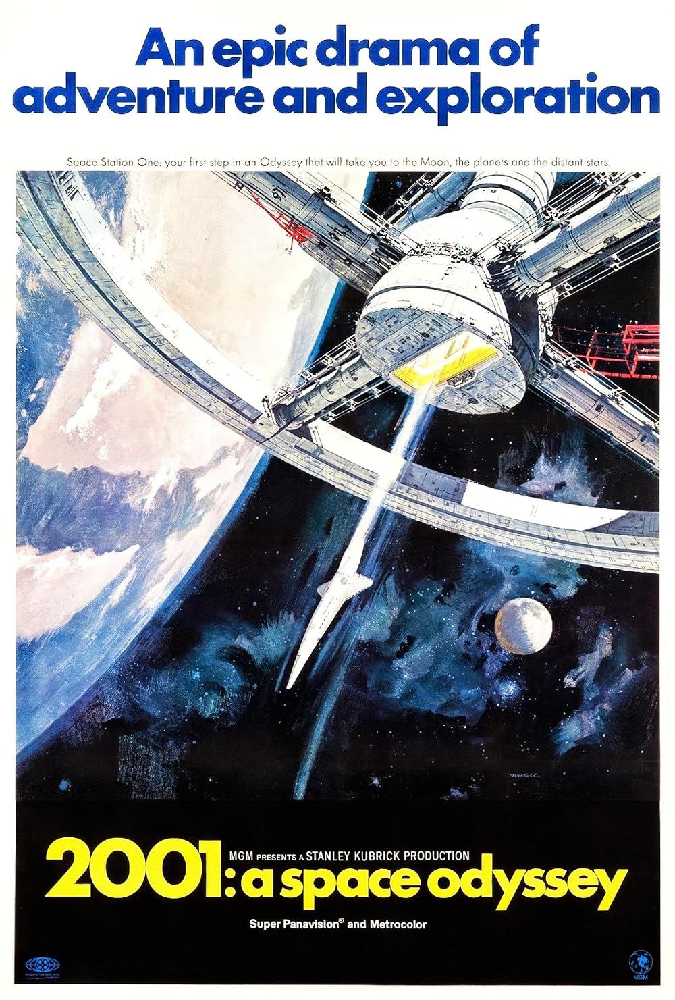
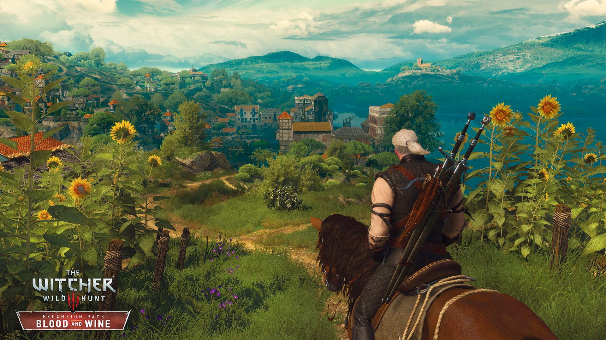
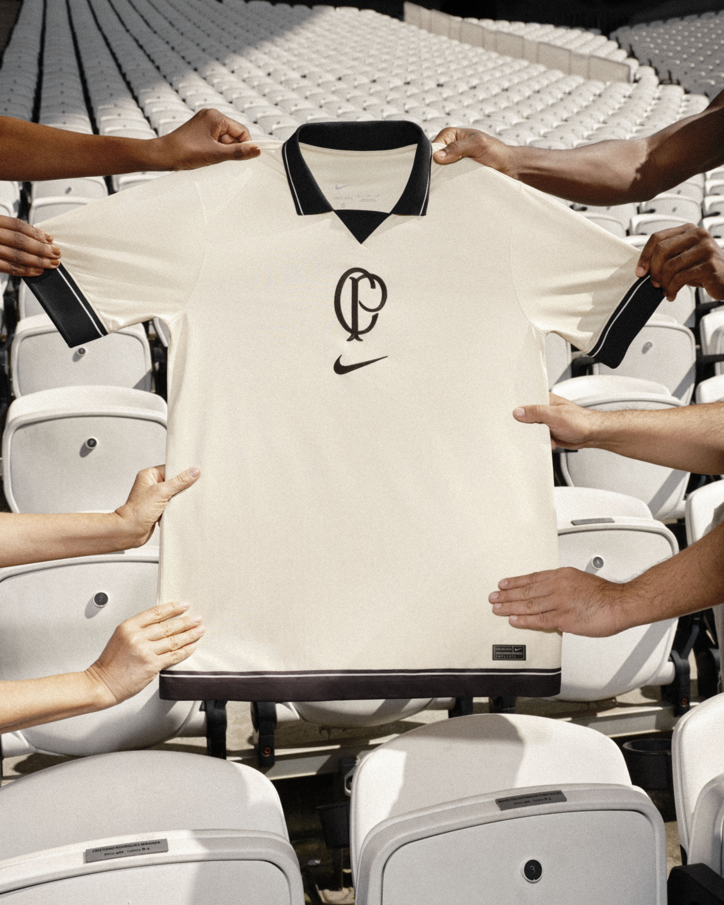
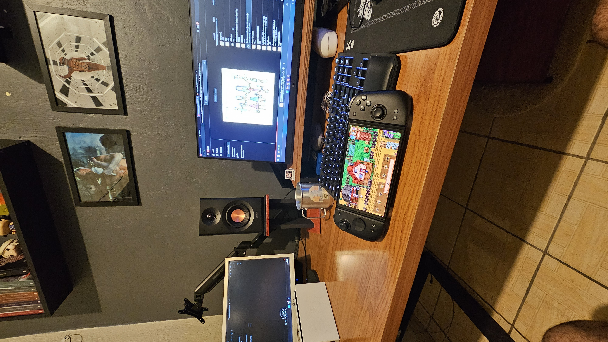

Breno Bastos Rocha
Estudante de Ciencia da Computacao

Quem eu sou?
Sou o Breno, tenho 25 anos, moro em Diadema, trabalho como carpinteiro na Toledo do Brasil e estou no primeiro semestre de Ciencia da Computacao na FEI. Desde pequeno sou aficionado pela area de tecnologia, e estou muito feliz com a oportunidade de aprender e criar. Nesse site, pretendo testar e aplicar meus conhecimentos mostrando uma pequena parte do que eu sou.
Meus Hobbys
Assistir filmes

Gosto muito de ver filmes desde pequeno, vou ao cinema pelo menos uma vez por mes. Sou fa de sci-fi e meu filme favorito e 2001 uma odisseia no espaco
Jogar videogame

Outro gosto relacionado a midia. Sempre procuro jogar algo no meu tempo livre. Meu jogo favorito e The Witcher 3, ja zerei o jogo base + dlcs 3 vezes e pretendo zerar novamente nas ferias apos a atualizacao e nova dlc.
Colecionar camisas do Corinthians

Sou corinthiano doente desde que me conheco por gente. Ja faz 20 anos da minha primeira vez no estadio, e desde entao, sempre acompanho o Corinthians onde quer que seja. Comecei uma colecao 7 anos atras, tenho mais de 30 camisas. A camisa mais antiga e de 1990, primeiro titulo brasileiro do Timao.
Fazer projetos de marcenaria

Por ser carpinteiro de profissao, peguei gosto por fazer projetos exclusivamentes PESSOAIS. nao bato um prego pra ninguem que nao seja eu ou minha firma. A parte de madeira de todo meu setup foi planejada e montadada por mim.